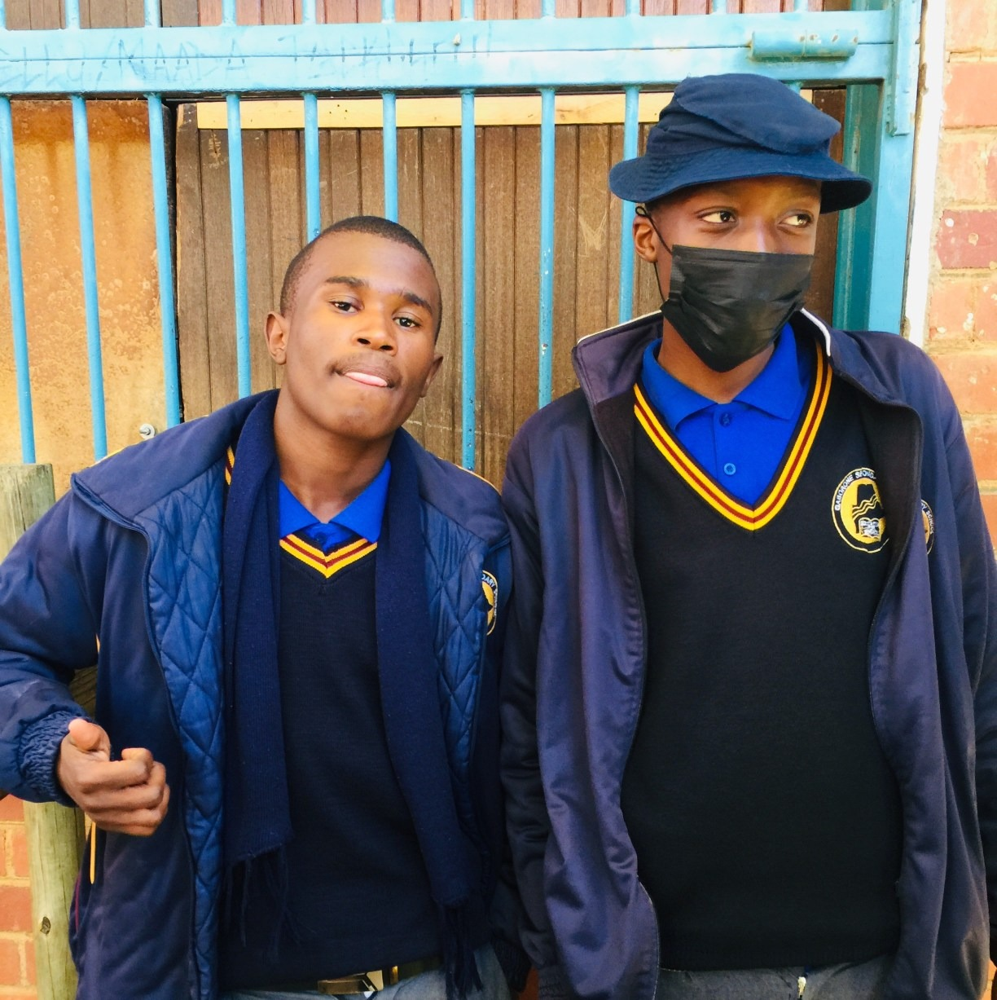
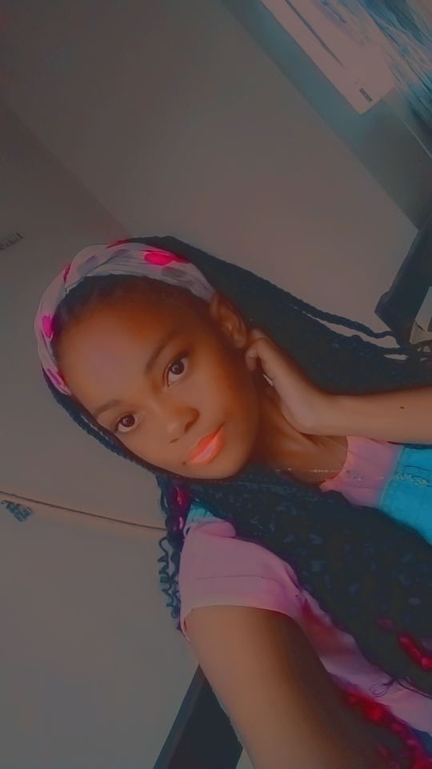

My Roots
These are the people who walk beside me at Gaborone Senior Secondary School. Each one plays a part in my journey, my growth, and my story.

Phemelo
Kind, focused, and quietly powerful. Phemelo inspires me more than they know.

Joseph
Strategic and thoughtful. Joseph brings clarity and calm to every moment.

Tumiso
Always curious, always building. Tumiso is a spark in every conversation.

Goitse
Always curious, always building. Goitse is a spark in every conversation.

Thobo
Focused and driven. Thobo reminds me to stay sharp and aim high.
Realeboga
Always real, always grounded. Realeboga keeps the vibe honest and strong.

Wapula
Creative and bold. Wapula brings color and courage to every idea.
Teto
Quiet strength and deep insight. Teto sees what others miss.